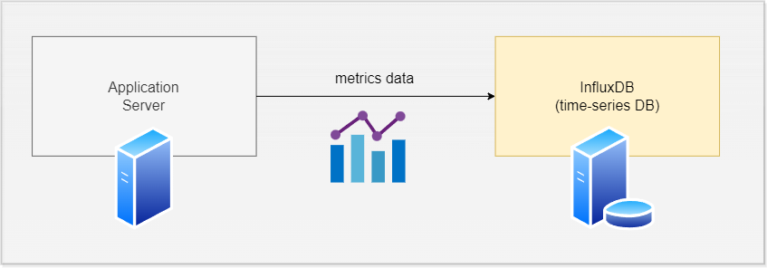
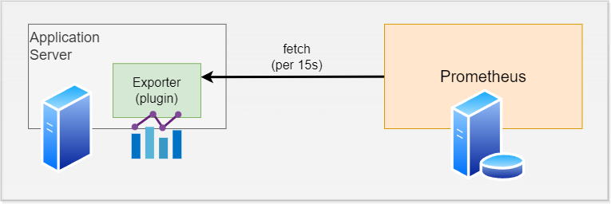

リアルタイムサーバーの
メトリクス可視化
リアルタイム性が求められるサービスの
メトリクス収集・分析・監視ソリューション検討
Yu Kusanagi
メトリクス可視化とは

CPU, メモリ使用量, ネットワークトラフィックなど
サーバーの状態をデータとして収集・可視化
モチベーション
- リアルタイムサーバー = オンラインゲームなどのリアルタイム性が求められるバックエンド
- 安定性およびパフォーマンスがシビアに重視される
- サーバーの問題でマッチング・インゲームが開始できないと一瞬でユーザーが離れる
- 同時接続人数等の要件を満たしたとしても、パフォーマンスが悪いと運用費がかさむ
- 稼働時だけでなく、開発中もパフォーマンスを可視化しておくことで問題の早期発見・解決につなげたい
- = ローカル環境でのパフォーマンスチューニング
- 一般的なWebサービスではデファクトスタンダードが存在する
-> ElasticSearch やPrometheus + Grafana - リアルタイムサーバーでは何を採用すべきか？
- 「デファクトはないっすね」
- by 某大規模IPタイトルMMOゲームエンジニア
メトリクス可視化
ソリューションの選択肢
Elastic Search (on AWS)
- ECサイトなどでのログ解析ではデファクト
- 堅牢なエコシステム
- マッシブなトラフィックに耐えられるインフラ
- 🤔 ローカル環境での運用は事実上不可能
Prometheus + Grafana
- Prometheus: メトリクス収集
- Grafana: 可視化(ビジュアライゼーション)
- Web全般的にそれなりのデファクト性
- k8sと併用するノウハウも多い（スケール耐性）
- ローカル・dockerでも運用可能
- 🤔 Pull型のデータ蓄積
- データのタイムスタンプが
Prometheusのタイムスタンプに依存する
- データのタイムスタンプが
- 🤔 msecオーダーの解析には見せ方の工夫が必要
Influx DB (時系列DB)
+ 可視化サービス(Grafana等)
- 愚直で柔軟な構成
- リアルタイム性の高いデータ収集
- ローカル・dockerでも運用可能
- 🤔 高負荷アラートなどは自前での実装が必要
- 🤔 自前でスケーリングの設計が必要
最終手段: 自前で作る
やめといたほうがいい
既存のソリューションを踏まえたうえで
欲しい要件がある場合に限る
Push型 / Pull型について
Push型: InfluxDBの例
Push型 : サーバー側がデータを送信する

Pull型: Prometheusの例
- Pull型 : メトリクスサービス側がアプリサーバーのデータを取得しに行く
- アプリ側に Prometheus Exporter プラグインをインストール
/metricsエンドポイントが生える
- Prometheusサーバーが定期的(15s間隔とか)に
/metricsにアクセスし、メトリクスを取得

Prometheusではデータのタイムスタンプ
= アクセス時刻となる
- アプリケーションサーバー自身のタイムスタンプをデータとして残せない
- 関数の実行時間など、msecオーダーの解析にはデータの見せ方に工夫が必要
Grafanaについて
- データ可視化ツールとしてはデファクト
- Prometheus, InfluxDB など多くのデータソースに対応
- 古くから存在するが未だに活発（UIおしゃれ）
- ビジュアライゼーション向けのデータ加工機能が豊富
- 大体欲しい機能はなんでもある。手放しで採用してよし(2024 個人の感想)
Grafanaのデモ
Sandboxがあるよ https://play.grafana.org/
end